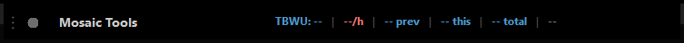

Widget Bar
The small always-on-top MosaicTools bar — TBWU metrics, critical-note count, STT health light, and connectivity dots at a glance, with everything else one right-click away.

📷 screenshot coming
What it does
The bar is MosaicTools' home: a compact, always-on-top strip you park at a screen edge. Left to right:
- ⋮ drag handle — grab here to move the bar (position is remembered).
- Ensemble health dot — the STT traffic light (green/yellow/red); click for the per-provider drawer.
- ⚠ critical count — red badge showing critical notes placed this session; click for the list.
- Title — click to open Settings.
- TBWU metrics — your selected productivity numbers.
- Connectivity dots — a 2×2 grid of server-status dots (when the Network Monitor is enabled); click for details.
Toast notifications stack at the bottom-right of the screen for action feedback, warnings, and update news.
How to turn it on / set it up
Nothing — it appears when MosaicTools starts (unless you launch in headless mode). Individual indicators appear as their features are enabled (TBWU metrics, connectivity dots, critical tracking, custom STT).
Using it
Right-click the bar for the menu:
- Settings — the settings window (also: click the title).
- Show Log — opens the log folder with the log files selected, for sending in a bug report.
- Reload — restarts the app in place.
- Backup Settings / Restore Settings — save or restore your entire configuration as a
.backupfile. - Debug — copy diagnostic snapshots (template, clinical history, Get Prior, Critical Findings, alerts) to the clipboard.
- Exit.
A system-tray icon is always present too, with Settings / Show Log / Exit; double-click it to open Settings.
Tips & gotchas
- If the bar ends up on a disconnected monitor, Reload brings it back to a visible screen.
- The health dot is split-colored during an STT failover: left half shows the original ensemble's health, right half the currently active stack.
- Take a settings backup before experimenting — Restore + automatic reload gets you back in seconds.